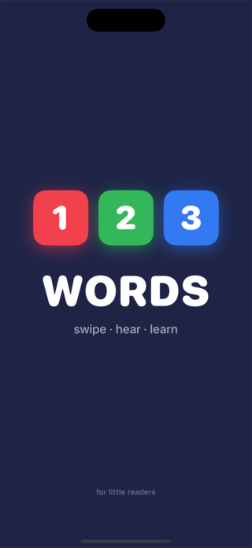
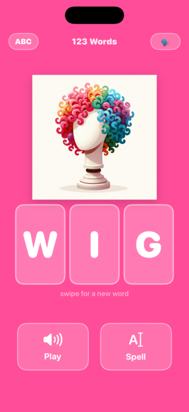
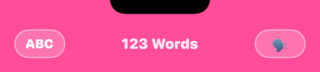
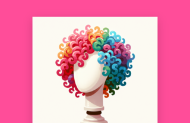
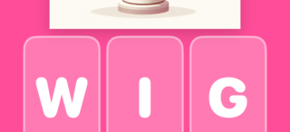
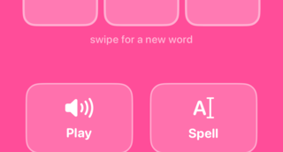
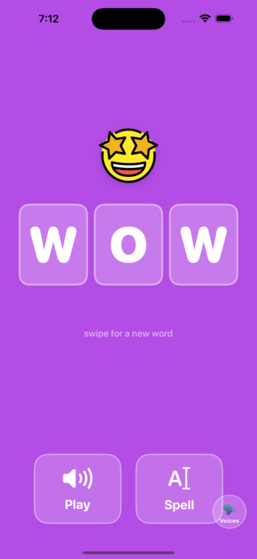
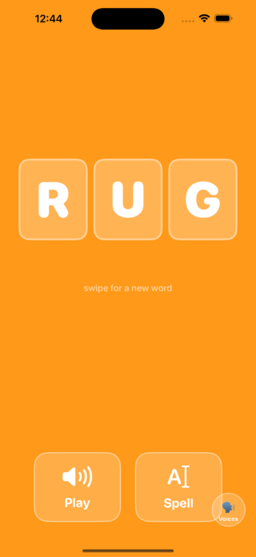

1. First Launch
Every time the app starts you'll see a splash screen for about two seconds before the first word appears. This gives kids a clear signal that the app is loading.

The dark navy background and the three coloured tiles match the app icon, so children recognise it immediately. The screen dismisses on its own — no tap needed.
2. The Main Screen
After the splash, the first word appears. Every element of the screen has one job.

Top Bar

| Control | What it does |
|---|---|
| ABC button | Toggles between UPPERCASE and lowercase letters. Tap once — all tiles and text switch instantly. |
| 123 Words (title) | Display only — no tap action. |
| VOX button (top right) | Opens the Voices picker so you can change the reading voice. |
Word Picture

Pictures come from three sources (see Word Pictures for details). AI-generated images float gently up and down while the word is displayed.
Letter Tiles

The word is always three letters. Each letter has its own rounded tile. During the Spell animation each tile lights up brighter as its letter is spoken.
Buttons

| Button | What it does |
|---|---|
| 🔊 Play | Speaks the whole word in one go. Tap again to replay. |
| A| Spell | Says each letter in sequence while the matching tile pulses brighter. |
3. Swiping for a New Word
Swipe anywhere on the screen — left or right — to jump to the next word. The background colour changes with every word, keeping the experience visually fresh.

The word is also spoken automatically when it first appears (after a short pause), so children hear the word without needing to tap anything.
4. Hearing the Word — Play
Tap the Play button to hear the word spoken clearly. The app uses the device's built-in text-to-speech engine, so the voice quality is high and the pronunciation is natural.
- You can tap Play as many times as you like — each tap replays the word from the start.
- The word is also spoken automatically when a new word appears (0.6 second delay).
- To change which voice speaks, tap the VOX button — see Voices.
5. Spelling the Word — Spell
Tap Spell to hear each letter spoken one at a time. As each letter is said, its tile briefly brightens so children can follow along visually.

After all three letters have been spelled, the full word is spoken as a recap — so the session for each word ends with the complete pronunciation.
6. Uppercase / Lowercase
Tap the ABC button in the top-left corner to toggle between capital and lowercase letters. The change applies instantly to the tiles.
| Mode | Tile display | Best for |
|---|---|---|
| ABC (uppercase) | W · I · G | Early learners seeing letters for the first time |
| abc (lowercase) | w · i · g | Kids who know capitals and are learning lowercase forms |
The setting is not saved between sessions — the app always opens in uppercase so it's consistent for the youngest readers.
7. Word Pictures
Every word has an image. Pictures come from three sources, shown with a badge if you flip them over.
| Source | Badge | Description |
|---|---|---|
| AI-generated | AI | Custom illustration created with DALL-E 3 specifically for this app. These images float gently while displayed. |
| OpenMoji | Emoji | Open-source emoji artwork (openmoji.org). Clean, colourful, recognisable. |
| SF Symbol | Symbol | Apple system icons, used as a fallback when no other image is available. |
Revealing Image Provenance
Place two fingers simultaneously on any word picture to flip it over. The back of the card shows:
- The source badge (AI / Emoji / Symbol)
- A short description of where the image came from
Tap anywhere else, or two-finger tap again, to flip back to the picture.
8. Choosing a Voice
Tap the VOX button in the top-right corner to open the Voices picker. You can choose from any text-to-speech voice installed on the device.
- The default voice is the system default English voice.
- Additional voices can be downloaded in Settings → Accessibility → Spoken Content → Voices.
- Higher-quality (Enhanced / Premium) voices sound more natural and are recommended for young learners.
- Your chosen voice is remembered between sessions.
9. Parent Controls
A hidden settings area gives parents access to configuration options. It is protected by a tap sequence that young children are unlikely to discover by accident.
Unlocking Settings
While viewing any word with 3 or more letters, tap this exact sequence within 8 seconds:
Example — if the word is CAT: tap C → Spell → T → Play → A.
Settings Options
| Setting | Description |
|---|---|
| Word List | View all words in the app, see which ones have images, and browse the Image Gallery. |
| Image Gallery | A filterable grid of every word image. Filter by All / AI / Emoji / Symbol / Missing. Useful for checking coverage and image quality. |
| Parent Onboarding | Re-read the welcome guide that explains how the combo works and what each button does. |
Image Gallery
The gallery shows all ~220 words with their images and provenance badges. Use the filter tabs at the top:
- All — every word
- AI — AI-generated images only
- Emoji — OpenMoji images only
- Symbol — SF Symbol fallbacks
- Missing — words with no image (target: zero)
Use the search bar at the top of the gallery to find a specific word instantly.
10. Word List
The app includes over 220 three-letter words chosen for clarity and child-friendliness. The list covers:
| Category | Examples |
|---|---|
| Animals | ant, bat, bee, cat, cow, dog, elk, emu, fox, hen, jay, owl, pig, ram, yak |
| Body & People | arm, ear, eye, lip, man, men, rib, toe |
| Food & Drink | bun, fig, ham, jam, oat, pie, rye, tea |
| Nature | dew, elm, fog, ice, ivy, mud, oak, sky, sun |
| Objects & Tools | axe, bag, bin, box, bus, can, cup, jar, jug, key, kit, lab, oar, urn |
| Actions & Play | dig, hop, jog, run, ski, tap, zip |
| Other common words | big, few, hot, new, old, red, wet |
Words are presented in random order each session. The random order is re-shuffled each time the app launches, so each session feels different.
Quick Reference
| Gesture / Control | Action |
|---|---|
| Swipe left or right | Go to next word |
| Tap Play | Hear the whole word |
| Tap Spell | Hear each letter, then the whole word |
| Tap ABC | Toggle uppercase / lowercase |
| Tap VOX | Open voice picker |
| Two-finger tap on picture | Flip to see image source |
| Tap 1st letter → Spell → 3rd → Play → 2nd | Unlock parent settings |